Engine · 54-02-04a
Check battery cable connections for tightness. Check cables for frayed insulation or excessive corrosion. Replace as required.
Inspect Secondary Ignition Wiring
Inspect the secondary (high-tension) wiring for cracked insulation or indications of heat damage. Be sure that the spark plug wires are fully seated on the spark plugs and that the connections to the coil and distributor are bottomed in the receptacles provided.
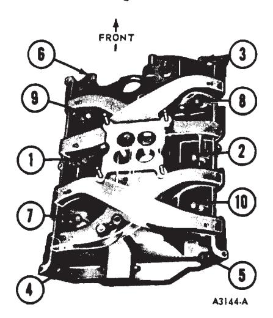
Fig. 7 — Intake Manifold Torque Sequence — 390-428 Engines\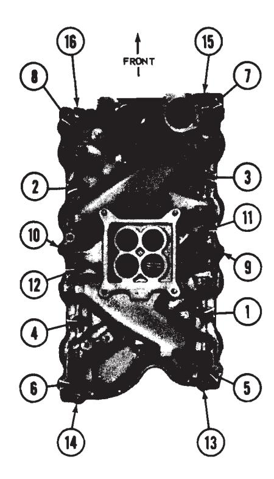
Fig. 8 — Intake Manifold Torque Sequence — 429 Engine\Inspect, Clean, Adjust and Test Spark Plugs — Replace as Required
Removal
- Remove the wire from each spark plug by grasping, twisting and then pulling the moulded cap of the wire only. Do not pull on the wire because the wire connection inside the cap may become separated or the weather seal may be damaged.
- Clean the area around each spark plug port with compressed air, then remove the spark plugs.
Cleaning and Inspection
-
Examine the firing ends of the spark plugs, noting the type of deposits and the degree of electrode erosion. Refer to Fig. 11 for the various types of spark plug conditions and causes.
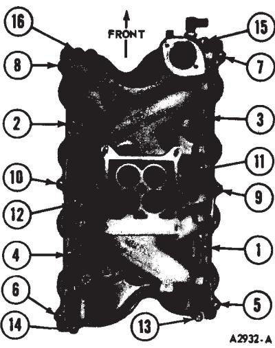
Fig. 9 — Intake Manifold Torque Sequence — 429 and 460 Engines\ -
Clean the plugs on a sand blast cleaner, following the manufacturer’s instructions. Do not prolong the use o the abrasive blast as it will erode the insulator. Remove carbon and other deposits from the threads with a stiff wire brush. Any deposits will retard the heat flow from the plug to the Cylinder head causing spark plug overheating and pre-ignition.
-
Clean the electrode surfaces with a small file (Fig. 12). Dress the electrodes to secure flat parallel surfaces on both the center and side electrode.
-
After cleaning, examine the plug carefully for cracked or broken insulators, badly pitted electrodes, and other signs of failure. Replace as reauired.
Adjustment
Set the spark plug gap by bending the ground electrode (Fig. 13), Never bend the center electrode.
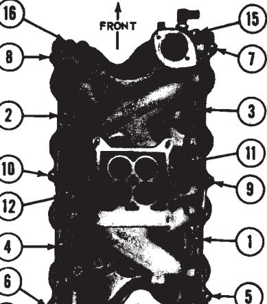
TESTING
After the proper gap is obtained, check the plugs on a testing machine. Compare the sparking efficiency of the cleaned and gapped plug with a new plug. Replace the plug if it fails to pass the test as outlined in the tester instruction manual.
Test the plugs for compression leakage at the insulator seal. Apply a coating of oil to the shoulder of the plug where the insulator projects through the shell, and to the top of the plug, where the center electrode and terminal project from the insulator. Place the spark plug under pressure with the tester’s high tension wire removed from the spark plug. Leakage is indicated by air bubbling through the oil. If the test indicates compression leakage, replace the plug. If the plug is satisfactory, wipe it clean.
Installation
- Install the spark plugs and torque each plug to 15-20 ft-lbs.
- Connect the spark plug wires. Check wire position in support brackets. Press wires firmly into proper bracket slots. Push all weather seals into position.
Check and Adjust Distributor Points Replace as Required
Unsnap the distributor cap retaining clips, lift the distributor cap off the distributor housing, and position the cap out of the way (if necessary, remove the air cleaner and/or the high tension wire to gain access to the distributor).
Lift the rotor off the cam.
Refer to Part 22-03 of the Shop Manual for distributor point specifications.
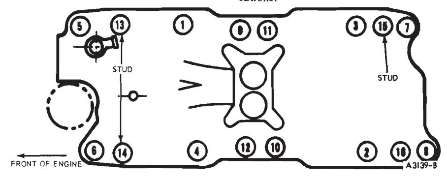
Fig. 10 — Intake Manifold Torque Sequence — 351 W-2V Engine\Carbon Fouled
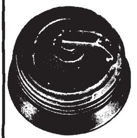
IDENTIFIED BY BLACK, DRY FLUFFY CARBON DEPOSITS ON INSULATOR TIPS, EXPOSED SHELL SURFACES AND ELECTRODES. CAUSED BY TOO COLD A PLUG, WEAK IGNITION, DIRTY AIR CLEANER, DEFECTIVE FUEL PUMP, TOO RICH A FUEL MIXTURE, IMPROPERLY OPERATING HEAT RISER OR EXCESSIVE IDLING. CAN BE CLEANED.
Oil Fouled
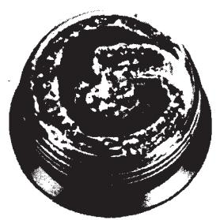
IDENTIFIED BY WET BLACK DEP-OSITS ON THE INSULATOR SHELL BORE ELECTRODES CAUSED BY EXCESSIVE OIL ENTERING COMBUS-TION CHAMBER THROUGH WORN RINGS AND PISTONS, EXCESSIVE CLEARANCE BETWEEN VALVE GUIDES AND STEMS, OR WORN OR LOOSE BEARINGS. CAN BE CLEANED IF ENGINE IS NOT REPAIRED, USE A HOTTER PLUG.
Gap Bridged
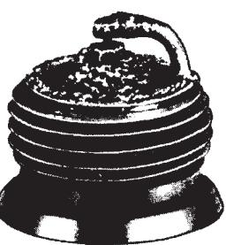
IDENTIFIED BY DEPOSIT BUILD-UP CLOSING GAP BETWEEN ELECTRODES. CAUSED BY OIL OR CARBON FOULING. IF DEPOSITS ARE NOT EXCESSIVE, THE PLUG CAN BE CLEANED.
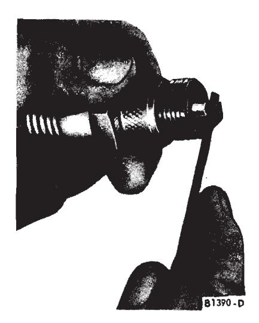
Fig. 12 — Cleaning Spark Plug Electrode\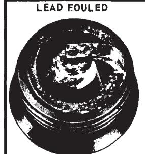
IDENTIFIED BY DARK GRAY, BLACK, YELLOW OR TAN DEPOSITS OR A FUSED GLAZED COATING ON THE INSULATOR TIP. CAUSED BY HIGHLY LEADED GASOLINE. CAN BE CLEANED.
Normal
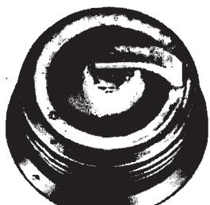
IDENTIFIED BY LIGHT TAN OR GRAY DEPOSITS ON THE FIRING TIP.
CAN BE CLEANED.
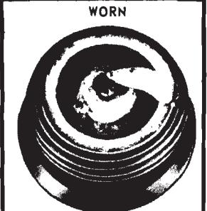
IDENTIFIED BY SEVERELY ERODED OR WORN ELECTRODES. CAUSED BY NORMAL WEAR. SHOULD BE REPLACED.
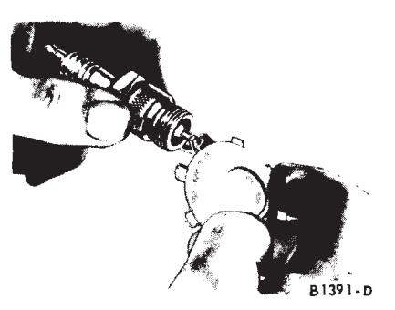
Fig. 13 — Checking Spark Plug Gap\Breaker Point Inspection
Breaker points should be inspected, cleaned and adjusted as necessary. Breaker points can be cleaned with chloroform and a stiff bristle brush. Caution: Make sure there is adequate room ventilation. Replace the breaker point assembly if the contacts are badly burned or excessive metal transfer between the points is evident (Fig. 14). Metal transfer is considered excessive when it equals or exceeds the gap setting.
Breaker Point Alignment
The vented-type breaker points used in Ford distributors must be accurately aligned in order to realize the full advantages provided by this design, and to assure normal breaker point life. Any misalignment of the breaker point surfaces will cause premature wear, overheating, and pitting.
- Turn the distributor cam so that the breaker points are closed and
Fused Spot Deposit
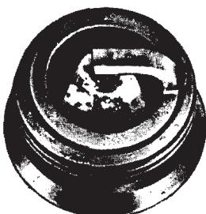
IDENTIFIED BY MELTED OR SPOTTY DEPOSITS RESEMBLING BUBBLES OR BLISTERS. CAUSED BY SUDDEN ACCELERATION. CAN BE CLEANED.
Overheating
IDENTIFIED BY A WHITE OR LIGHT GRAY INSULATOR WITH SMALL BLACK OR GRAY BROWN SPOTS AND WITH BLUISH-BURNT APPEARANCE OF ELECTRODES, CAUSED BY ENGINE OVERHEATING. WRONG TYPE OF FUEL, LOOSE SPARK PLUGS, TOO HOT A PLUG, LOW FUEL PUMP PRESSURE OR INCORRECT IGNITION TIMING. REPLACE THE PLUG.
Pre-Ignition
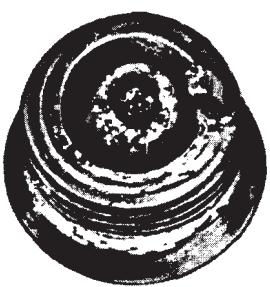
IDENTIFIED BY MELTED ELECTRODES AND POSSIBLY BLISTERED INSULATOR. METALLIC DEPOSITS ON INSULATOR INDICATE ENGINE DAMAGE.
DAMAGE. CAUSED BY WRONG TYPE OF FUEL. INCORRECT IGNITION TIMING OR ADVANCE, TOO HOT A PLUG, BURNT VALVES OR ENGINE OVERHEATING. REPLACE THE PLUG.
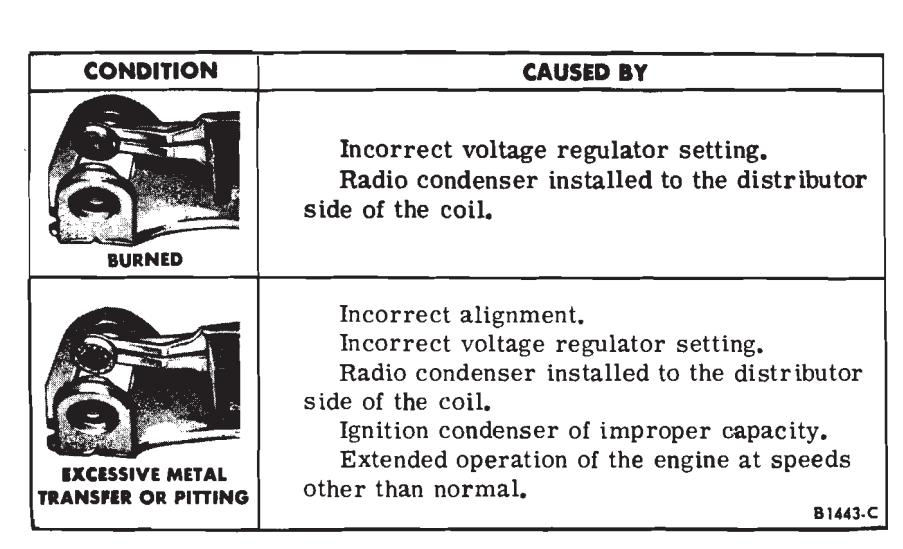
Fig. 14 — Breaker Point Inspection\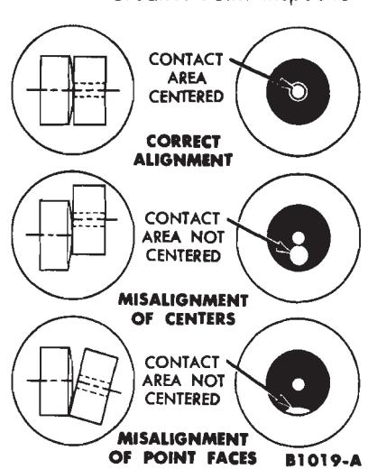
Fig. 15 — Breaker Point Alignment Guide\check the alignment of the points (Fig. 15).
- Align the breaker points to make full face contact by bending the stationary breaker point bracket (Figs. 16 and 17). Do not bend the breaker arm.
- After the breaker points have been properly aligned, adjust the breaker point gap or dwell.
Dwell Angle Adjustment
Use a dwell meter to check the contact dwell. It is not advisable to use a feeler gauge to check the gap of used breaker points because the roughness of the points makes an accurate gap reading or setting impossible.
If the used points are serviceable, set the gap using a dwell meter as follows:
-
Connect the dwell meter fol-
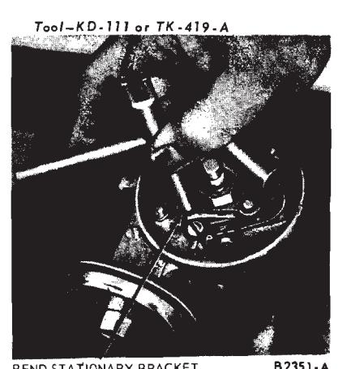
BEND STATIONARY BRACKET
Fig. 16 — Aligning Breaker Points — Typical\
lowing the manufacturer’s instruc-
-
Operate the engine at specified idle speed and note the reading on the dwell meter.
-
Stop the engine and adjust the gap (decreasing the gap increases the dwell). Now check the dwell again.
-
Repeat this procedure until specified dwell is obtained.
If new points are installed, set the gap to specifications using a feeler gauge. Check setting with dwell meter.
If the distributor is equipped with dual breaker points, adjust the dwell of each set separately in order to get the specified combined dwell. The most precise method is to disconnect one set of points while adjusting the other, since spring tension on the cam is then equal. Alternately, a piece of plastic can be inserted between the contacts of one set to take it out of the circuit. As an example: where a 33 degree combined dwell is specified, the points are set separately at 25-25 1/2 degree to secure the specified 33 degree dwell.
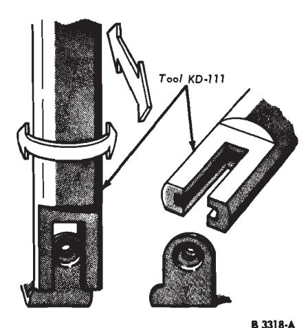
Fig. 17 — Aligning Breaker Points\ -
Install the rotor. Install the distributor cap on the distributor housing and snap the retaining clips in place.
Check and Adjust Initial Ignition Timing
The procedure for setting the ignition timing includes functional checks of the centrifugal advance, vacuum advance or vacuum retard.
Refer to the end of this part for ignition timing specifications.
-
Clean and mark the timing marks. Be sure the distributor vacuum lines are properly connected.
-
Disconnect the vacuum line (single-diaphragm distributors) or vacuum lines (dual-diaphragm distributor), and plug the disconnected vacuum line(s) (Fig. 18).
-
Connect a timing light to the No. I Cylinder spark plug wire. Install an engine speed tachometer. Loosen the distributor hold-down bolt.
-
Start the engine. Reduce the engine idle to 600 rpm to be sure no centrifugal advance is taking place. Adjust the initial ignition timing to specifications by rotating the distributor in the proper direction.
-
Check the centrifugal advance for proper operation. Start the engine and accelerate it to approximately 2000 rpm. If the ignition timing advances, the centrifugal advance mechanism is functioning properly. Note the engine speed when the advance begins and the amount of advance. Stop the engine.
-
Unplug the carburetor source vacuum line and connect it to the dis- tributor vacuum advance unit (outer diaphragm on dual diaphragm distributors). Start the engine and accelerate it to approximately 2000 rpm. Note the engine speed when the advance begins and the amount of advance. Advance of the ignition timing should begin sooner and advance farther than when checking the centrifugal advance alone. Stop the engine.
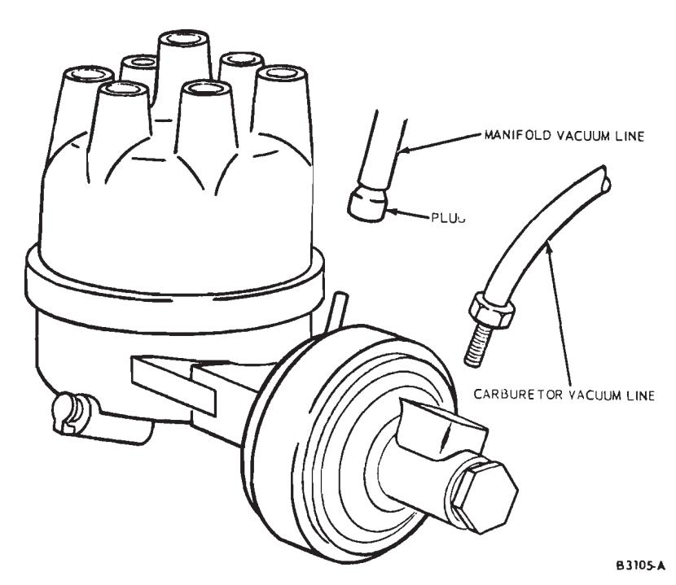
Fig. 18 — Adjusting Dual Diaphragm Distributor\ -
Check the vacuum retard operation on dual-diaphragm distributors. Connect the intake manifold vacuum line to the inner (retard) diaphragm side of the vacuum advance. Reset and operate the engine at normal idle speed. The initial timing should retard to approximately TDC, if the initial ignition timing is correct. On some engines it will go as low as 6 degrees ATC (degrees after top center).
-
If the vacuum advance or vacuum retard (dual-diaphragm distributors) is not functioning properly (refer to steps 6 and 7 above), remove the distributor and check it on a distributor tester. Replace the dual diaphragm unit if the retard portion is not to specification. The advance portion cannot be calibrated to specifications, or either of the diaphragms are leaking. Unplug and reconnect the distributor vacuum lines. Remove the timing light and tachometer.
Clean Choke External Linkage
Examine the choke external linkage for free operation. If the linkage appears to be sticking, or is dirty, clean the linkage using a brush and common mineral-spirits type cleaning fluid. Operate the choke plate manually to make sure that it moves freely. Lubricate the choke plate shaft at each end and the choke operating link with engine oil if necessary. Choke adjustment specifications are in Part 54.06
Idle Speed and Fuel Mixture
Any modification of the emission control systems is subject to the penalties of Federal law (U.S.A.) if made prior to the first sale and registration, and is subject to penalties under the laws of some states if made thereafter.
Adjustment specifications are given in Part 54-06.
All carburetors on engines manufactured for use in the U. S. are equipped with idle fuel mixture adjusting limiters. The limiters control the maximum idle richness and help prevent unauthorized persons from making overly rich idle adjustments.
The plastic idle limiter cap is installed on the head of the idle fuel mixture adjusting screw(s) Figs. 19 and 20. Any adjustment made on carburetors having this type of limiter must be within the range of the idle adjusting limiter. Under no circumstances are the idle adjusting limiters or the limiter stops on the carburetor to be mutilated or deformed to render the limiters inoperative. On Autolite models 2100-D 2-V carburetor, the power valve cover must be installed with the limiter stops on the cover in position to provide a positive stop for tabs on the idle adjusting limiters (Fig. 19).
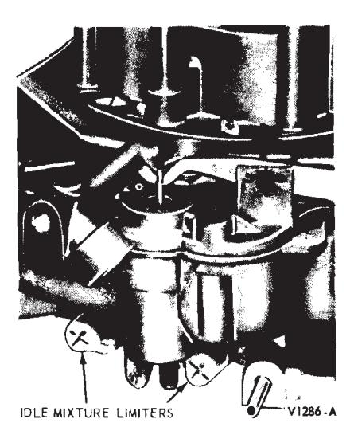
Fig. 19 — Idle Fuel Limiters — Autolite 4300 4-V\Fig. 20 — Autolite Model 2100-D 2-V Idle Adjusting Limiters and Limiter Stops — Bottom View\
A satisfactory idle should be obtainable within the range of the idle adjusting limiters, if all other engine systems are operating within specifications.
At pre-delivery, follow the Normal Idle Fuel Settings for both Engine Off and Engine On and in Step 1 of Additional Idle Speed and Fuel Mixture Procedures. Other fuel system adjustments should not be required at pre-delivery service.
Following are the normal procedures necessary to properly adjust the engine idle speed and fuel mixture. The specific operations should be followed in the sequence given whenever the idle speed or idle fuel adjustments are made.
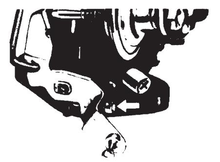
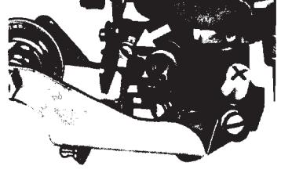
CARTER MODEL RBS 1-V
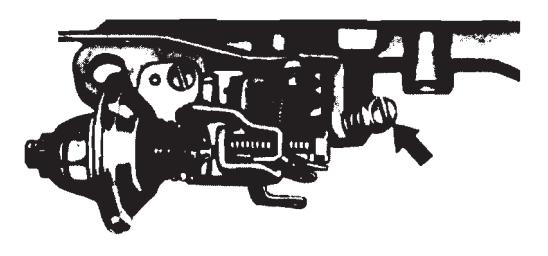
AUTOLITE MODEL 2100-D, 2-V
CARTER MODEL YE 1.V
HOLLEY MODEL 4150C 4-V
AUTOLITE MODEL 4300 4-V
ROCHESTER MODEL 4 MV
Fig. 21 — Idle Speed Adjusting Screws\
In isolated cases, a satisfactory idle condition may not be achieved by performing the normal procedures. If this occurs, refer to Additional Idle Speed and Fuel Mixture Procedures.
Normal Idle Fuel Settings — Engine Off
-
Set the idle fuel mixture screws and limiter cap(s) to the full-counter-clockwise position of the limiter cap(s) as illustrated in Fig. 20.
On export vehicles not equipped with exhaust emission control systems, establish an initial idle mixture screw setting by turning each screw inward until it is lightly seated; then turn it outward 1-1/2 turns. Do not turn the screws tightly against the screw seat, as this may damage the end of the screw. If the screw end is damaged, it must be replaced before a satisfactory adjustment can be obtained.
-
Back off the curb idle speed adjusting screw (Fig. 21) until the throttle plate(s) seat in the throttle bore(s).
-
Be sure the dashpot or solenoid throttle positioner (if so equipped) is not interfering with the throttle lever (Fig. 22).
- It may be necessary to loosen the dashpot or solenoid to allow the throttle plate(s) to seat in the throttle bore(s).
-
Turn the curb idle speed adjusting screw inward until it just makes
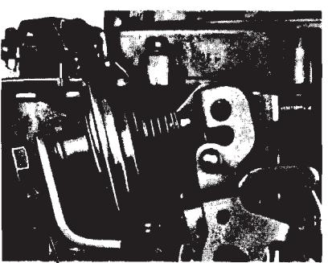
DASHPOT LOCKNUT
Fig. 22 — Dashpot — Typical Installation\
contact with the screw stop on the throttle shaft and lever assembly. Then, turn the screw inward 1 1/2 turns to establish a preliminary idle speed adjustment (Fig. 21).
-
Set the parking brake while making idle mixture and speed adjustments. On a vehicle with a vacuum release parking brake, remove the vacuum line from the power unit of the vacuum release parking brake assembly. Plug the vacuum line, then set the parking brake. The vacuum power unit must be deactivated to keep the parking brake engaged when the engine is running with the transmission in Drive.
Normal Idle Fuel Settings — Engine On
Set the parking brake while making
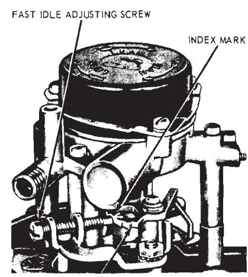
FAST IDLE CAM
Fig. 23 — Fast Idle Speed Adjustment — Autolite Model 2100-D 2-V\
Idle Fuel Mixture and Speed Adjustments.
-
The engine and underhood temperatures must be stabilized before idle adjustments are made. Run the engine a minimum of 20 minutes at 1500 rpm. This can be done by positioning the fast idle screw on the kickdown step of the fast idle cam (Figs. 23, 24 and 25).
-
Check the initial ignition timing and the distributor advance and retard as described under Check and Adjust Ignition Timing. Use an accurate-reading tachometer and timing light when checking the initial igni- tion timing and idle fuel mixture and speed.
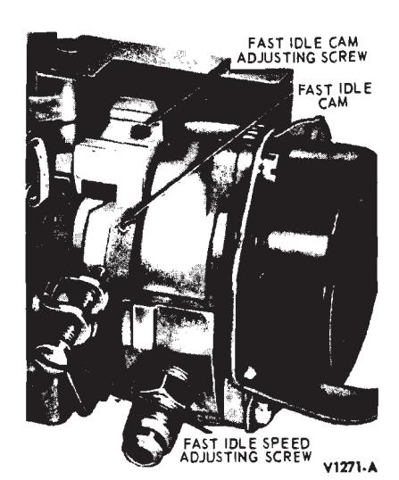
Fig. 24 — Fast Idle Speed Adjustment — Autolite Model 4300 4-V\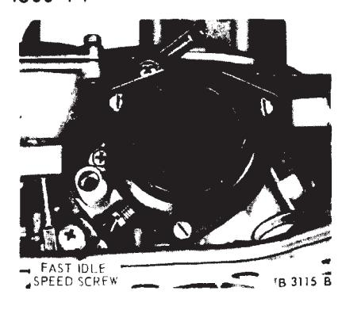
Fig. 25 — Fast Idle Speed Adjustment — Holley Model 4150-C4-V\ -
On vehicles with a manual-shift transmission, the idle setting must be made only when the transmission is in Neutral.
On vehicles with an automatic or semi-automatic transmission, the idle setting is made with the transmission selector lever in the Drive range, except as noted when using an exhaust gas analyzer.
-
Be sure the choke plate is in the full-open position.
-
On carburetors equipped with a hot idle compensator, be sure the compensator is seated to allow for proper idle adjustment (Fig. 26).
-
Turn the headlights on high
-
The final idle speed adjustment is made with the air conditioner (if equipped) turned OFF.
-
Adjust the engine curb idle rpm to specifications. The tachometer reading (rpm) must be taken with the air cleaner installed. On vehicles with less than 50 miles, set the idle speed approximately 25 rpm below specifications to allow for an rpm increase as engine loosens up in the first 100 miles of driving.
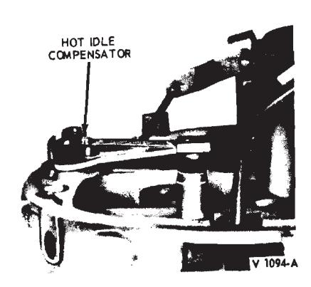
Fig. 26 — Hot Idle Compensator\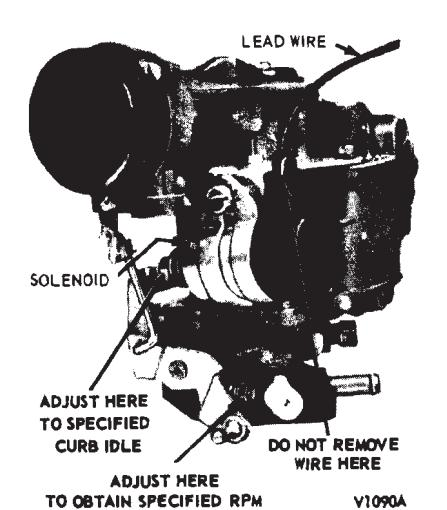
Fig. 27 — Carter Model YF 1-V With Solenoid Throttle Positioner\If it is not possible to adjust the idle speed with the air cleaner installed, remove it, make the adjustment; then replace the air cleaner and check again for the specified rpm.
On the Autolite 2-V and Rochester 4-V carburetors equipped with a solenoid throttle positioner, turn the solenoid assembly in or out of the bracket to obtain the specified curb idle rpm, then tighten the lock nut. Disconnect the solenoid lead wire at the hand. The solenoid plunger will follow the throttle lever and remain in the fully extended position as long as the ignition is on and the solenoid is energized.
On the Carter I-V, Autolite 4-V and Holley 4-V carburetors equipped with a solenoid throttle positioner (Fig. 27), turn the solenoid plunger screw in or out to obtain the specified curb idle rpm. Disconnect the solenoid lead wire at the bullet connector near the harness, then adjust the carburetor throttle stop screw to obtain 500 rpm. Connect the solenoid lead wire and open the throttle slightly by hand. The solenoid plunger will follow the throttle lever and remain in the fully extended position as long as the ignition is on and the solenoid is energized.
-
Turn the idle mixture adjusting screw(s) inward to obtain the smoothest idle possible within the range of the idle limiter(s).
On 2- and 4-venturi carburetors, turn the idle mixture adjusting screws inward an equal amount.
Check for idle smoothness only with the air cleaner installed.
Additional Idle Speed and Fuel Mixture Procedures
If a satisfactory idle condition is not obtained after performing the preceding normal idle fuel settings, additional checks of engine systems must be performed.
-
The following items should be checked and, if required, corrected. a. Vacuum leaks b. Ignition system wiring continui c. Spark plugs d. Distributor breaker point dwell angle e. Distributor point condition f. Initial ignition timing
In certain instances, it may be possible that the idle condition is not as good as normally expected. It is suggested that the customer with a new vehicle be advised that the vehicle be driven 50 to 100 miles. Then, when the engine friction has been reduced, the idle condition should be improved. If, after the break-in period, the idle condition is believed to be unsatisfactory, readjust the engine idle speed to specification and observe for a satisfactory idle.
-
If the idle condition is not improved after the items in step 1 have been checked, perform the following engine mechanical checks: a. Fuel level b. Crankcase ventilation system c. Valve clearance (using the col- lapsed tappet method for hydraulic lifters)
d. Engine compression
-
After verification of all engine systems has been made, there may be isolated cases where a satisfactory idle condition has not been obtained, due possibly to a lean idle fuel mixture. If this condition is encountered, check the air-fuel ratio with the aid of an exhaust gas analyzer, and adjust the air-fuel ratio to specifications.
Use of the Exhaust Gas Analyzer
The use of the exhaust gas analyzer is recommended only after the Normal Fuel Setting Procedures and Additional Idle Speed and Fuel Mixture Procedures have been performed and the engine condition is still not satisfactory.
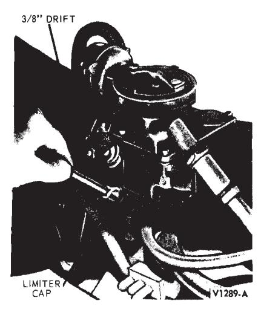
Fig. 28 — Idle Limiter Installation — Autolite or Carter Carburetors\-
Connect a Rotunda Model ARE 27-56 U or 76 Exhaust Gas Analyzer, or equivalent A/C-powered unit, in accordance with instructions provided by the manufacturer. All exhaust gas analyzers must be checked for proper calibration. Rotunda analyzers must have Certified Calibration identification on the face of the instrument.
-
On a Thermactor-equipped vehicle, disconnect the Thermactor pump air supply hose at the air pump or the check valve(s). Do not adjust for the drop in engine idle speed, which occures when the air supply hose is disconnected. Note the amount of rpm drop for use in step 4.
-
Observe the reading obtained on the exhaust gas analyzer. The analyzer reading must be taken with the air cleaner installed. Refer to the specifications for the specified minimum air-fuel ratio.
-
Turn the idle mixture adjusting screw(s) as required within the range of the idle limiter until the specified air-fuel ratio is obtained (on 2- and 4-V carburetors, turn the screws an equal amount). The analyzer reading must be obtained with the air cleaner installed. Correct for any changes in engine idle speed immediately as the idle mixture screw(s) are turned.
(Refer to the drop in idle rpm obtained when the Thermactor air pump hose(s) were disconnected in step 2, then correct the idle speed to the rpm noted.) Allow at least 10 seconds following each idle mixture screw adjustment for the analyzer reading to properly respond and stabilize.
Verify the analyzer reading-Thermal conductivity exhaust gas analyzers will give an erroneously rich reading if the air-fuel mixture is extremely lean. To check for this condition, partially hand choke the carburetor, or rapidly open and close the throttle three or four times, to enrich the air-fuel mixture. The analyzer meter will reflect the momentary rich condition, then will deflect in the lean direction as the rich condition subsides, and will gradually return to a richer reading as the excessively lean air-fuel ratio is produced. Vehicle with an automatic transmission must be in Neutral while this is being done.
-
If the air-fuel ratio is to specifications, and the various engine systems are functioning correctly, no further adjustments should be made.
If the air-fuel ratio is not to specifications, as shown by the analyzer reading, it may be corrected by altering the controlled limits of the carburetor idle fuel system. Refer to Removal and Installation of Idle Limiter Caps.
Removal and Installation of Idle Limiter Caps
-
Remove the plastic limiter caps by cutting with side-cutter pliers or knife. After the cut is made, carefully pry the limiter apart. On some carburetors, it may be necessary to remove the carburetor to remove the limiter.
On Holley carburetors, pry the caps off with a screwdriver.
-
After the limiters are removed, set the carburetor to the correct airfuel ratio, using the exhaust gas analyzer.
-
When the air-fuel ratio is within specifications, install a colored plastic service limiter cap.
When installing the limiter cap (Figs. 28 and 29), use care not to turn the idle mixture screw with the cap. Position the cap so that it is in the maximum counterclockwise position with the tab of the limiter against the stop on the carburetor.
The idle mixture adjusting screw will then be at the maximum allowable outward, or rich, setting.
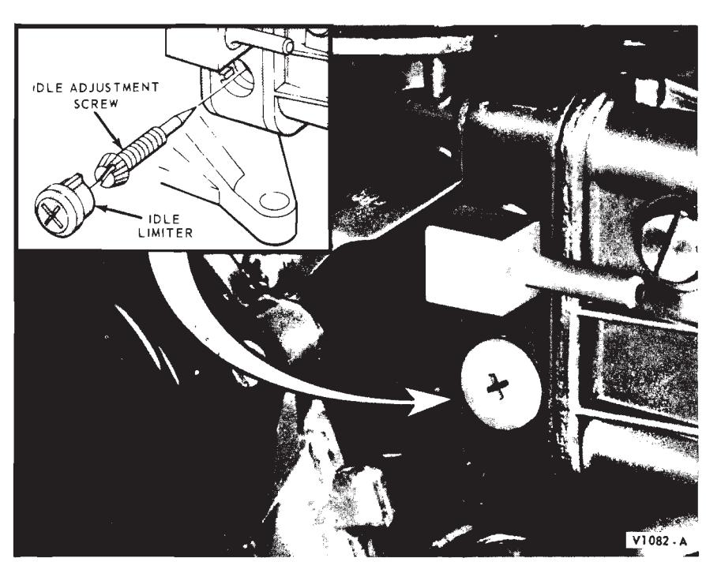
Fig. 29 — Idle Limiter Installation — Holley 4150 C 4-V\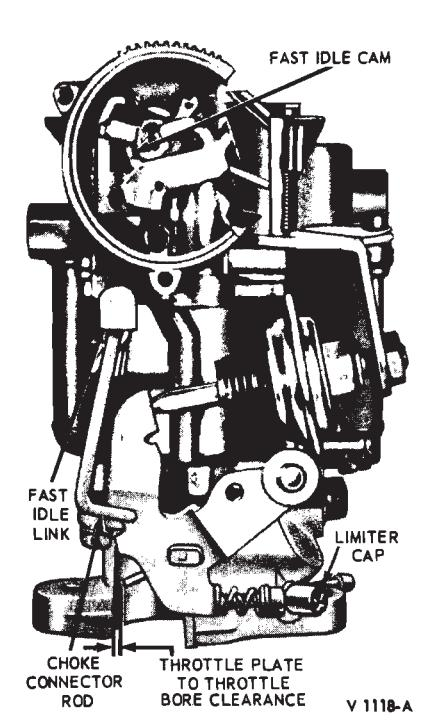
Fig. 30 — Fast Idle Speed Adjustment — Carter Model YF\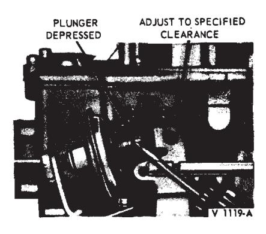
Fig. 31 — Typical Anti-Stall Dashpot Adjustment\To install the service limiter cap, use a straight, forward pushing force with thumb pressure or a 3/8-inch drift or socket wrench extension.
-
Recheck the air-fuel ratio with the air cleaner installed, using the exhaust gas analyzer to make sure the limiter caps are properly installed.
Fast Idle Adjustment
The fast idle adjusting screws (Figs. 24 and 25) contacts one edge of the fast idle cam. The cam permits a faster engine idle speed for smoother running when the engine is cold during choke operation. As the choke plate is moved through its range of travel from the closed to the open po- sition, the fast idle cam pick-up lever rotates the fast idle cam. Each position on the fast idle cam permits a slower idle rpm as engine temperature rises and choking is reduced.
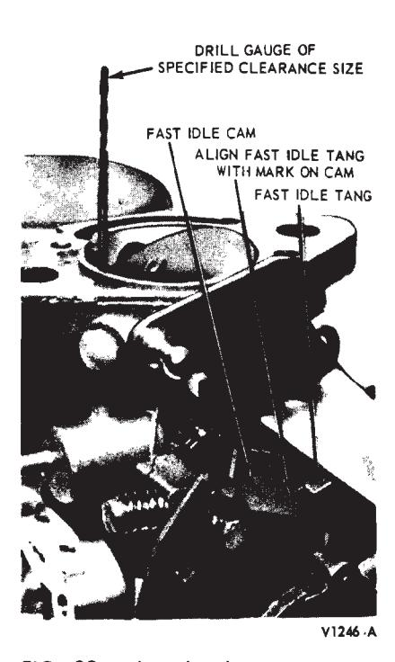
Fig. 32 — Throttle Plate Clearance — Carter Model RBS 1-V\Make certain the curb idle speed and mixture is adjusted to specification before attempting to set the fast idle speed.
- With the engine operating temperature normalized (hot), air cleaner removed and the tachometer attached, manually rotate the fast idle cam until the fast idle adjusting screw rests on the specified step of the cam.
- Turn the fast idle adjusting screw inward or outward as required to obtain the specified idle rpm.
Carter Model YF 1-V
The carburetor must be removed from the engine to check or correct the fast idle speed adjustment.
- Open the throttle plate and hold the choke plate fully closed to allow the fast idle cam (Fig. 30) to revolve to the fast idle position.
- Close the throttle and use a drill with a diameter equal to the specified clearance to check the clearance between the throttle plate and throttle body bore (Fig. 30). To adjust the clearance, bend the choke connector rod in a direction to open or close the throttle as required.
Carter Model RBS 1-V
The fast idle speed is determined by the fast idle linkage setting and the specified throttle plate clearance.
The carburetor must be removed from the engine to check or correct the fast idle throttle plate clearance speed adjustment.
Fast Idle Linkage
- Fully close the choke plate.
- Align the fast idle tang on the throttle lever with the index mark on the fast idle cam.
- At this position, the choke connector rod end should be at the top end of the slot in the fast idle cam. To adjust, bend the choke connector rod at the offset portion as required.
Throttle Plate Clearance
- Align the fast idle tang on the throttle lever with the index mark on the fast idle cam. Use a drill with a diameter equal to the specified clearance between the throttle plate and the throttle bore at the idle port side to check the clearance (Fig. 32).
- To adjust for the specified clearance, bend the tang on the throttle lever to increase or decrease the throttle plate clearance as required.